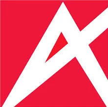
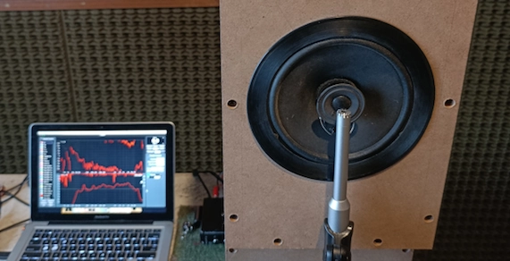
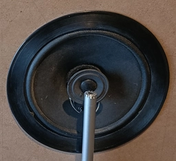
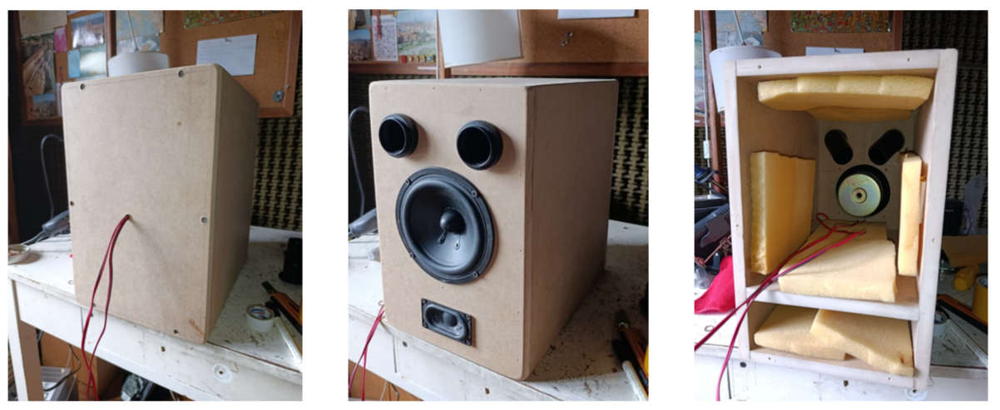

Consultor Acústico | Técnico en Electrónica de Audio | Tesista de Ingeniería de Sonido (UNTREF)
Consultor técnico enfocado en garantizar el confort acústico y la fidelidad sonora. Ayudo a estudios de arquitectura, empresas y productoras a certificar sus espacios bajo normativas internacionales y a resolver problemas de ruido mediante diagnósticos de alta precisión técnica.
Proyectos
Acústica Arquitectónica


Diagnóstico de aislación corporativa (Sector Bancario)Evaluación de pérdida de inserción en tabiques divisorios para oficinas corporativas.
Impacto comercial: Se garantizó la privacidad y confidencialidad requerida para salas de reuniones y despachos gerenciales, certificando la aislación acústica frente a estándares del sector financiero.

 Diagnóstico de control room de estudio El Misilito
Diagnóstico de control room de estudio El Misilito
Diagnóstico integral para garantizar una escucha confiable y sin coloraciones.
Impacto comercial: Se identificaron y eliminaron las deficiencias acústicas que causaban fatiga auditiva, permitiendo a los ingenieros del estudio tomar decisiones de mezcla más rápidas y precisas.

Evaluación del impacto acústico tras la instalación de paneles PET de diseño.
Impacto comercial: Se transformó un espacio altamente ruidoso en un ambiente confortable. Los clientes ahora pueden escuchar claramente a los instructores sin el estrés generado por el aturdimiento, mejorando la experiencia y retención de socios.
Acondicionamiento para maximizar la inteligibilidad y el confort en oficinas de planta abierta.
Impacto comercial: Aumento directo en la productividad del equipo y reducción del estrés laboral. Se logró un entorno normado donde las reuniones y llamadas transcurren con total claridad.
Electroacústica


Diseño, construcción y medición de un sistema de dos vías coaxialPrototipado integral de gabinetes customizados y validación de respuesta en frecuencia.
Enfoque Técnico: Recuperación y reciclaje de transductores antiguos para desarrollar un sistema moderno de alta fidelidad, aplicando mediciones precisas de impedancia y simulación de volumen.

 Diseño, simulación y medición de un sistema de dos vías
Diseño, simulación y medición de un sistema de dos vías
Desarrollo electroacústico desde la planimetría CAD hasta el diseño del crossover (VituixCAD).
Enfoque Técnico: Análisis minucioso de la directividad del sistema para asegurar una cobertura uniforme y un rendimiento óptimo de las cajas ventiladas.
Experiencia Profesional
Consultor Acústico e Instalador — New Concept Co.
Septiembre 2025 – Presente
- Consultoría B2B: Realización de mediciones in-situ y redacción de informes técnicos que validan el éxito de las instalaciones acústicas frente a los clientes.
- Asesoramiento Comercial: Apoyo directo a la venta de paneles acústicos PET recomendando configuraciones efectivas según las patologías de cada espacio.
Técnico Electrónico — Yaeltex Custom MIDI Controllers
Agosto 2024 – Enero 2025
- Armado, soldadura y control de calidad inicial de controladores MIDI a medida para clientes internacionales.

Profesor particular de Física y Matemática — Freelance
Agosto 2021 – Presente
- Organización de técnicas de estudio y tutorías.

Ayudante de Cátedra — UNTREF
Marzo 2024 – Diciembre 2025
- Asistencia académica en las materias Laboratorio de Electrónica 1 e Introducción a la Acústica.
¿Necesitás diagnosticar o certificar acústicamente un espacio?
Ya sea un proyecto en etapa de planos o un espacio comercial que sufre de ruido excesivo, la medición técnica precisa es el primer paso para una solución efectiva.
Escribime por WhatsApp